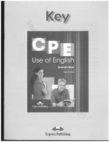

CUCPE Use of English kitobining to'liq javoblar to'plami.
Ushbu qo'llanma ingliz tilini chuqur o'rganuvchilar uchun mo'ljallangan bo'lib, CPE imtihoniga tayyorgarlik ko'rishda yordam beradi. Kitobda grammatika va leksikaga oid turli topshiriqlarning to'liq javoblari keltirilgan.